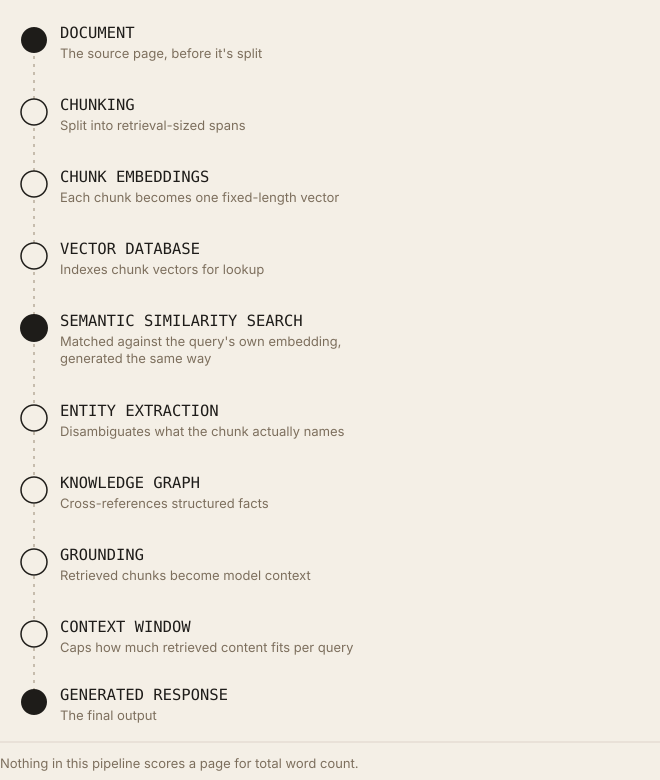

AI Retrieval Rewards Specificity, Not Word Count
The correlation between word count and rankings was always about backlinks, not length. Dense retrieval makes the case for information density mechanistic instead of correlational.
Executive Summary
Backlinko's widely cited analysis of Google search results found that first-page results average around 1,447 words, a correlation the SEO industry spent a decade treating as near-causal, producing a generation of content briefs specifying minimum word counts as a proxy for quality. Backlinko's own researchers were explicit that this is a correlation study, and that longer content's advantage traces substantially to backlinks, a confirmed ranking factor that longer content happens to attract more of, not to length itself. AI retrieval systems break this proxy relationship further: dense retrieval matches a query against a specific chunk's embedding, and a chunk diluted by repetition, filler, or unfocused tangents produces a less precise vector than a chunk saying the same substantive thing concisely. This article separates the documented, correlation-only evidence for word count from the mechanistic, better-grounded case for information density in retrieval systems specifically, and states clearly where long-form content remains genuinely valuable, since comprehensiveness and padding are not the same thing.
Introduction
Traditional SEO encouraged longer content because the correlational evidence, however imperfect, was consistently in one direction: Backlinko's 2016 analysis of 11.8 million search results, and its 2019 follow-up analysis of 912 million blog posts, both found first-page results and highly shared content skewing long. Many publishers and content teams reasonably, if imprecisely, translated that correlation into a working assumption: more words signals more comprehensive coverage, which signals more quality, which should rank better.
Modern AI retrieval systems evaluate content through a different mechanism entirely, not by scoring a whole page's word count, but by embedding individual chunks and matching them against a query's embedding at retrieval time. This article works through why that mechanism structurally favors information density over length, without overstating the case: comprehensive, well-researched long-form content remains valuable for genuinely complex topics, and this article does not claim short articles categorically outperform long ones. What follows separates the specific, documented mechanics of retrieval scoring from the correlational, causation-uncertain evidence base traditional SEO built its length-based advice on.
Why Longer Content Became Popular
Long-form SEO as an industry practice grew out of a sequence of correlation studies, the most influential being Backlinko's 2016 analysis of 11.8 million Google search results, which found the average word count of a first-page result to be approximately 1,447 words (an earlier, more widely repeated figure from the same lineage of research cited 1,890 words, with the specific number varying across the study's different published versions and update years).
Comprehensive content and topic coverage became the accompanying rationale: the assumption that longer content could cover a topic more exhaustively, satisfying more of a searcher's potential follow-up questions within a single page.
Ranking studies beyond Backlinko's reinforced the pattern directionally, Ahrefs' own large-scale analysis found a correlation between content length and backlinks specifically, though notably Ahrefs also reported this correlation weakening or reversing beyond roughly 1,000 words in at least one of its published analyses, a detail frequently omitted when the "longer content ranks better" claim is repeated.
Historical context: SerpIQ's 2012 study, an earlier and less rigorous predecessor to Backlinko's work, is frequently credited with popularizing the "ideal content length" framing industry-wide, well before AI retrieval existed as a consideration at all.
The limitation, stated with the precision this topic requires: Backlinko's own published research is explicit that longer content correlates with more backlinks, and that backlinks are the more directly confirmed ranking factor, meaning the length-ranking correlation may be substantially, or even primarily, mediated by link accumulation rather than length itself affecting relevance scoring. Google's own John Mueller has been characterized, across secondary SEO-industry reporting, as stating that good content outperforms merely long content, this article was not able to verify an exact, primary-sourced quotation for this specific framing, and notes that caveat explicitly rather than presenting it as a confirmed direct quote.
Correlation does not imply causation, stated directly because this is the single most important caveat in this section: every study cited above measures an association between length and ranking outcomes across a large sample; none of them isolates length as an independently manipulated variable while holding backlinks, domain authority, search intent match, and content quality constant. Backlinko's own researchers state this limitation openly in their published work. This article treats the length-ranking correlation as real and worth acknowledging, while treating any causal claim built on it, "longer content ranks because it's longer," as unsupported by the cited evidence.
How AI Retrieval Evaluates Content

Nothing in this pipeline scores a page for total word count.Semantic retrieval matches a query's embedding against the embeddings of individually chunked spans of content, as detailed in this article's companion research on chunk retrieval, the unit being scored is the chunk, not the page.
Embeddings represent a chunk's meaning as a single fixed-length vector; a chunk that packs a specific claim, entity, and supporting detail into two sentences produces a more precisely targeted vector than the same substantive content diluted across ten sentences of restatement and transition.
Chunk retrieval and entity extraction operate on that same chunk-level unit, disambiguated, explicitly named entities within a chunk reduce the ambiguity a retrieval and generation system otherwise has to resolve through inference.
Grounding supplies the retrieved chunks, not the source page in full, as context to a generation model, meaning a page's total word count has no direct bearing on what actually reaches the model unless the specific relevant chunk itself is well-formed.
Knowledge graphs provide a structured cross-reference independent of any document's length, a fact verified against Wikidata or Google's Knowledge Graph carries the same weight whether it appears in a 200-word page or a 5,000-word one.
Context windows, as covered in this article's companion research on chunking, impose an upper bound on how much retrieved content can be used per query, but that bound operates on the retrieved, already-selected chunks, not on a page's total length before selection; a long page contributes only whichever chunks actually get retrieved, and its remaining length is simply never seen by the model in that turn.
The mechanistic conclusion this pipeline supports: nothing in this architecture rewards a page for having more total words. What it rewards, at the chunk level, is a chunk's semantic precision, entity clarity, and self-contained completeness, properties length can support but does not, by itself, produce.
Information Density vs. Word Count
Information density, the ratio of unique, substantive, verifiable content to total word count within a given span of text.
Semantic density, a closely related concept describing how much distinct meaning an embedding-sized unit of text conveys; a chunk with high semantic density uses its available tokens to convey more distinct, retrievable facts or claims rather than repeating or padding around a smaller core of substance.
Redundancy, the presence of restated ideas that add length without adding new, retrievable information; in IR terms, redundant content within a single chunk doesn't improve that chunk's match quality for any query, since the embedding already captures the idea after its first, clearest expression.
Signal-to-noise ratio, borrowed from information theory, describing the proportion of a text span that constitutes meaningful, query-relevant content ("signal") versus filler, transitional padding, or irrelevant tangents ("noise"); a lower ratio dilutes an embedding's specificity.
Precision, a standard information retrieval metric: the proportion of retrieved results that are actually relevant to the query (relevant retrieved divided by total retrieved).
Recall, the complementary standard IR metric: the proportion of all truly relevant items in a collection that were successfully retrieved (relevant retrieved divided by total relevant in the collection).
Why repeating the same idea multiple times often adds little value, stated mechanistically: an embedding model converts a chunk's full text into one fixed-length vector. Restating an already-established point a second or third time within that chunk does not meaningfully shift the vector further toward that point's semantic direction, the model has already captured it after the first clear statement, while it does consume tokens that could otherwise represent additional, genuinely distinct information. In a chunk-size-constrained system, that's a direct opportunity cost: tokens spent on repetition are tokens not spent on additional retrievable substance.
Why Specificity Improves Retrieval
Named entities, explicit, disambiguated references (a company's full legal name, a specific product version) reduce the inferential burden on entity extraction and embedding, a mechanism detailed at length in this article's companion research on entity clarity.
Dates and numbers, concrete, specific figures make a chunk more useful as a citable, verifiable claim; a vague statement ("recently," "significantly") carries less retrievable value than a specific one ("in March 2026," "a 23% increase"), because the specific version can be matched against date- or magnitude-specific queries the vague version simply cannot answer.
Definitions, a chunk that explicitly defines a term it uses reduces the ambiguity a retrieval or grounding system would otherwise have to resolve from context alone, and makes the chunk independently useful even when retrieved without its surrounding page.
Examples, concrete illustrations anchor an abstract claim to specific, verifiable instances, giving an embedding model more distinct semantic content to represent than the abstract claim alone.
Technical terminology, used precisely and correctly, functions similarly to named entities: it resolves to a specific, matchable concept rather than requiring inference from a looser, more general description.
Original insights and unique observations, content that states something not readily available elsewhere in the retrieval corpus has a structural advantage in any system that's implicitly or explicitly weighting novelty or source diversity, though this article notes that no primary source reviewed here publishes the specific mechanics of how, or whether, any major AI platform's retrieval system explicitly rewards novelty as a scored factor, this is a reasonable inference from general information-retrieval principles (a system serving redundant content from many sources gains little by retrieving all of them), not a confirmed platform-specific finding.
Why precise language reduces ambiguity, stated as the connecting principle across all of the above: every one of these properties works by the same mechanism already established in this article's companion research on entity clarity and chunk quality, reducing the amount of inferential reconstruction a downstream system has to perform to correctly interpret a chunk's meaning. Vague, hedged, or generic language leaves more of that interpretive work to inference, which is a documented source of retrieval imprecision; specific, concrete language leaves less.
Long Articles vs. Dense Articles
| Dimension | Long Articles | Dense Articles |
|---|---|---|
| Word count | High, sometimes by design | Not the target metric, length follows from substance, not the reverse |
| Information density | Variable, can be high or low independent of length | The explicit target |
| Keyword repetition | Historically encouraged, now understood as ineffective under BM25 saturation and unhelpful for embeddings | Avoided in favor of varied, entity-rich phrasing |
| Entity richness | Not guaranteed by length alone | A direct, intentional design goal |
| Topic breadth | Can cover more sub-topics within one page | May intentionally cover less breadth per single chunk, in favor of depth per chunk |
| Semantic precision | Can be diluted across many topics/chunks within one long page | Higher, chunk by chunk, by design |
| Comprehensiveness | A genuine potential advantage for complex, multi-faceted topics | Achievable at the page level even with dense (not padded) individual sections |
| Retrieval confidence | Depends entirely on individual chunk quality within the page, not the page's total length | Directly targeted by the density-first approach |
| Useful evidence per chunk | Variable, a long page can contain both excellent and diluted chunks side by side | Consistently higher by design, assuming the density goal is genuinely met rather than merely claimed |
Where long-form content still has genuine advantages, stated without hedging: topics that are legitimately complex, multi-faceted, or require substantial supporting evidence and nuance benefit from the space long-form content provides, this article itself, addressing a technical topic requiring definitions, mechanisms, caveats, and evidence across many sub-questions, is a length-appropriate example rather than a counter-example. The distinction this article draws is not length versus brevity; it's density versus padding. A long article built from consistently dense, information-rich sections retains every retrieval advantage a short dense article has, chunk by chunk, while also covering more ground. A long article built from padding, repetition, and filler gets none of that benefit despite its word count.
Practical Examples
Before, vague, low-density:
Our software is really fast and efficient. It helps businesses save time and money. Many companies have seen great results using our platform. It's designed to be user-friendly and works well for teams of all sizes. Customers love how easy it is to use.
Five sentences, zero named entities, zero verifiable numbers, zero specific mechanism explaining why it's fast or efficient. An embedding of this paragraph carries almost no distinguishing signal, the same five sentences, with different adjectives, could describe thousands of unrelated products.
After, specific, entity-rich, information-dense:
Northbridge's query engine processes 50,000 concurrent requests with a median latency of 40ms, benchmarked against PostgreSQL 16 on identical hardware. Acme Logistics reduced their nightly batch-reporting job from 6 hours to 11 minutes after migrating in Q1 2026. The platform's REST API supports teams from 5 to 500 users without a re-architecture step, using the same underlying indexing engine at every scale.
Same length, roughly, as the "after" is a comparable word count, but every sentence now carries a specific, retrievable, independently citable claim: a named product, a measured latency figure, a named customer with a specific, dated outcome, a specific technical claim about architecture. Why the rewritten version is more retrieval-friendly: each sentence could independently serve as a grounded answer to a distinct, specific query ("how fast is Northbridge's query engine," "has anyone reduced reporting time using Northbridge," "does Northbridge require re-architecture to scale"), the vague version could serve none of those specific queries with any retrievable precision, regardless of how many times it were repeated or how long the surrounding page were.
Common Misconceptions
- "More words always rank better." Incorrect, per Backlinko's own published caveat that its findings are correlational, and per Ahrefs' finding that the length-backlink correlation itself weakens or reverses beyond roughly 1,000 words in at least one of its analyses.
- "AI prefers long articles." Incorrect as a general claim. Retrieval operates on individually embedded chunks; a long article's aggregate length has no direct scoring role in chunk-level semantic similarity matching.
- "Repeating keywords improves retrieval." Incorrect. Under BM25, keyword repetition is subject to term-frequency saturation, producing diminishing returns; under dense retrieval, repeating an already-captured idea does not meaningfully shift a chunk's embedding and consumes tokens that could otherwise add distinct, retrievable substance.
- "Every article should be 3,000-plus words." Incorrect as a universal rule. Appropriate length should follow from what a topic genuinely requires to be covered with precision and evidence, not from a fixed target applied uniformly regardless of topic complexity.
- "AI retrieves entire pages." Incorrect, and addressed in detail in this article's companion research on chunk retrieval: retrieval-augmented systems match queries against individually embedded chunks, not whole documents, as standard, documented architecture across every major vector-database and RAG-framework vendor examined in that research.
Practical GEO Checklist
- Increase information density within each section rather than each section's word count.
- Reduce repetition, state a claim once, clearly, rather than restating it with varied phrasing across a section.
- Use descriptive headings that name the specific claim or concept a section addresses, aiding both human scanning and chunk-boundary quality.
- Add named entities explicitly, on first mention within each section, per this article's companion research on entity clarity.
- Include original data or figures where genuinely available, specific, verifiable numbers carry more retrievable value than generalized claims.
- Define technical concepts explicitly within the content itself, rather than assuming shared context a chunk retrieved in isolation won't have.
- Provide concrete examples that anchor abstract claims to specific, verifiable instances.
- Use structured data on confirmed-relevant types, per this article's companion research on structured data's documented role in Google's AI features specifically.
- Improve semantic precision by choosing specific, technical terminology over vague, general phrasing where accuracy allows.
- Write for humans first, density and specificity serve human readers directly; they are not a separate, machine-only optimization layer distinct from good writing.
- Audit existing long-form content for sections that restate an already-established point without adding new substance, and cut or consolidate them.
- Test whether a section would remain meaningful and specific if read in isolation, disconnected from its surrounding page, the same test this article's companion chunking research recommends at the chunk level specifically.
- Avoid padding introductions and conclusions with generic framing that adds length without adding retrievable content.
- Prioritize one well-supported, specific claim per section over several vague, overlapping ones.
- Match length to topic complexity deliberately, a genuinely complex, multi-faceted topic justifies more length; a narrow, well-defined one does not.
- Replace vague quantifiers ("many," "significantly," "often") with specific figures wherever the underlying data exists to support them.
- Avoid keyword-density targets as a content-brief metric entirely, they optimize for a signal both BM25's saturation function and dense retrieval's embedding mechanics render largely ineffective.
- Combine density with comprehensiveness where a topic genuinely warrants both, long, consistently dense content retains every chunk-level retrieval advantage that short dense content has.
- Review content for restated ideas across separate sections, not just within a single section, since cross-section redundancy dilutes a page's overall chunk quality just as within-section redundancy does.
- Treat this as a rewriting discipline, not a length-cutting exercise, the goal is raising the density of existing length where it's justified, and removing padding where it isn't, not defaulting to short content regardless of topic.
Future Outlook
Longer context windows. As covered in this article's companion research on chunking, context windows have grown substantially by mid-2026, changing how much retrieved content can be included per query without eliminating the underlying need to select which content to retrieve from a large corpus in the first place, meaning density's relevance to what actually gets selected for retrieval is not diminished by larger windows, even as more selected content can now be used per query.
Agentic search. Multi-step agentic retrieval, where a system may issue several retrieval calls within a single session, plausibly compounds the cost of low-density content across steps, an agent building on an imprecise intermediate retrieval result carries that imprecision forward, a reasonable architectural inference rather than a documented, measured finding specific to any named production system.
Adaptive chunking. Published 2026-era techniques exploring query-dependent chunk granularity (as detailed in this article's companion chunking research) represent an active research direction distinct from static, one-time chunking, and would plausibly reward content whose density holds up regardless of exactly where a chunk boundary falls, dense content is more robust to chunking-strategy variation than padded content, which can lose its already-thin substance entirely if split awkwardly.
Real-time retrieval. Google's own stated architecture for AI Overviews, retrieval-augmented generation against its existing, continuously updated Search index, is a documented example of retrieval operating on live content; nothing in that architecture, per Google's own guidance, rewards page length independent of the specific retrieved and grounded content's relevance and quality.
Knowledge graphs. Continued reliance on structured, entity-linked facts (Google's Knowledge Graph, Wikidata) for grounding, as opposed to inferring facts from unstructured prose, plausibly reinforces the density argument further: a fact verified directly against a knowledge graph node carries the same evidentiary weight regardless of how many surrounding words a source article contains.
Context engineering, the emerging discipline of deliberately structuring what content gets assembled into a model's context window, as distinct from simply retrieving the top-N highest-similarity chunks, represents a plausible next step where content that is dense, self-contained, and cleanly boundaried at the chunk level has a structural advantage, since it requires less surrounding context to remain useful when assembled alongside other retrieved material. This is a reasonable extrapolation from current architecture and terminology use in the field, not a documented, named production capability this article can point to with a specific primary source.
Key Takeaways
- Backlinko's own published research explicitly frames its length-ranking finding as correlational, and attributes a substantial part of that correlation to backlinks, a confirmed ranking factor, rather than to length itself.
- Ahrefs' research found the length-backlink correlation weakening or reversing beyond roughly 1,000 words in at least one published analysis, a detail the "longer always ranks better" narrative typically omits.
- Retrieval-augmented systems score individually embedded chunks, not whole pages, a page's total word count has no direct role in chunk-level semantic similarity matching.
- Repeating an already-established idea within a chunk does not meaningfully shift that chunk's embedding, and consumes tokens that could otherwise represent additional, distinct, retrievable substance.
- Specificity, named entities, concrete numbers, explicit definitions, precise terminology, reduces the inferential burden on extraction, embedding, and grounding, the same mechanism established in this article's companion research on entity clarity.
- This article does not claim short content categorically outperforms long content; it distinguishes density from padding, and long, consistently dense content retains every chunk-level advantage short dense content has.
- Complex, multi-faceted topics genuinely warrant more length; the appropriate target is topic-matched depth, not a fixed word-count minimum applied universally.
- No primary source reviewed for this article documents word count as a direct ranking or retrieval-scoring factor for any major platform, Google, OpenAI, Anthropic, or Microsoft.
- The evidentiary case for density in retrieval is substantially mechanistic (how embeddings and chunk-level matching work) rather than a large-scale, controlled empirical study isolating density as an independent variable, this article states that distinction explicitly rather than overstating the evidence base.
- The future of GEO is unlikely to reward websites for publishing more words. It is more likely to reward websites that publish clearer ideas, stronger evidence, richer entities, and information that AI systems can retrieve, ground, and confidently cite.
Glossary
- Information density
- The ratio of unique, substantive, verifiable content to total word count within a given span of text.
- Semantic density
- How much distinct, retrievable meaning an embedding-sized unit of text conveys.
- Redundancy
- Restated content that adds length without adding new, retrievable information.
- Signal-to-noise ratio
- The proportion of a text span constituting meaningful, query-relevant content versus filler.
- Precision (IR)
- The proportion of retrieved results that are actually relevant to a query.
- Recall (IR)
- The proportion of all truly relevant items in a collection that were successfully retrieved.
- Chunk
- A contiguous, independently embedded and retrieved span of text extracted from a larger document.
- Padding
- Content added primarily to increase length rather than to add distinct, retrievable substance.
FAQ
Should I shorten all my existing long-form content?
Not necessarily. Audit for padding and redundancy specifically; content that's long because it covers a genuinely complex topic with consistent density across its sections doesn't need cutting on length grounds alone.
Is there an ideal word count for AI retrieval?
No primary source reviewed for this article publishes one, and this article does not propose one, the appropriate length follows from what a specific topic requires to be covered with precision and evidence, which varies by topic.
Does removing repetition hurt keyword coverage for traditional SEO?
Not meaningfully, per the mechanics described in this article's companion research on entity clarity and retrieval, varied, specific, entity-rich phrasing (synonyms, related terms, precise terminology) captures the semantic territory keyword repetition was historically meant to cover, without the diminishing-returns problem repetition specifically creates under both BM25 and embedding-based matching.
Can a short article ever outperform a comprehensive long one?
For a narrow, well-defined query where a short article states the answer with more precision and less surrounding noise than a long article buries the same answer within, yes, this is a chunk-level, query-specific outcome rather than a general rule that short content outperforms long content across the board.
References
- Backlinko, "We Analyzed 11.8 Million Google Search Results: Here's What We Learned About SEO"
- Backlinko, "We Analyzed 912 Million Blog Posts: Here's What We Learned About Content Marketing"
- Ahrefs, published analysis of content length and backlink correlation (cited across secondary SEO-industry sources; this article was unable to independently access Ahrefs' original primary publication and notes this as a limitation)
- Karpukhin, V., et al., "Dense Passage Retrieval for Open-Domain Question Answering," Proceedings of EMNLP 2020 (ACL Anthology)
- Reimers, N., and Gurevych, I., "Sentence-BERT: Sentence Embeddings using Siamese BERT-Networks," Proceedings of EMNLP-IJCNLP 2019 (ACL Anthology)
- Robertson, S., and Zaragoza, H., "The Probabilistic Relevance Framework: BM25 and Beyond," Foundations and Trends in Information Retrieval, 2009
- Pinecone, "Chunking Strategies for LLM Applications"
- Google for Developers, "AI Features and Your Website," Google Search Central documentation